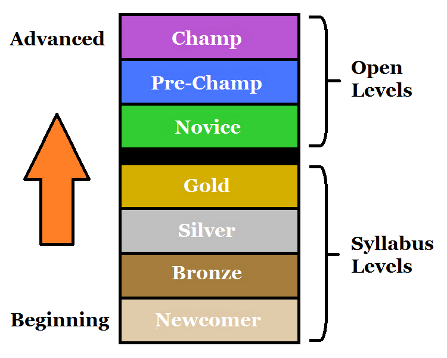
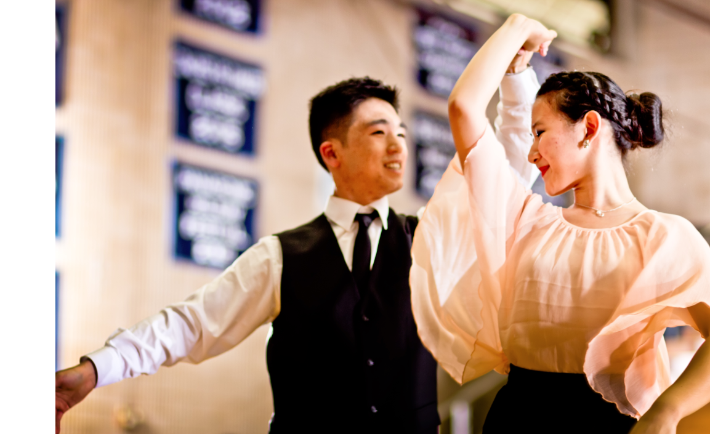

The Full Beginner's Guide to Competition
What is a Ballroom Competition
Different Levels
What to Wear
Walkthrough
Advice from Other Dancers
What is a Ballroom Competition
A Ballroom Competition is a way for dancers to show off their skills and be ranked among their peers in dancing. At a competition, couples of the same level are ushered onto a large dance floor all at once, surrounded by judges standing along the edges. The DJ then plays music lasting about a minute and a half corresponding to a particular dance style (e.g. Cha Cha, Waltz, etc.), and then all the couples begin dancing to that music. While they dance, the audience cheers, and the judges mark which couples they think are the best. At the end of the music, couples bow and walk off the floor, arm in arm. In the end, the top couples are given their awards, ranging from ribbons and trophies to scholarships or even cash prizes.
Different Levels
If we were to combine all the dancers in the world, the top few would keep winning and everyone else would be discouraged. This is why the level system was invented, separating dancers by skill level. For Amateurs, there are seven skill levels, shown in the graphic on the left. The lowest four levels are called the Syllabus levels. This is because dancers in these levels may only dance certain steps, which are listed in an internationally accepted document called the Syllabus. These levels get progressively harder from Newcomer to Gold, as the skill level of the dancers competing in these events increases. Newcomer is distinct in that it is only for those who have been dancing for a very short period of time (sometimes less than 6 months, sometimes less than 1 year, depending on the competition's rules). Beyond the Gold level, there are the Open levels. These levels are comprised of advanced dancers who can dance whatever steps they like, even those not found in the Syllabus. Champ level dancers are the top tier amateurs, and often compete in international competitions all over the world.
If you have been dancing for less than six months, you should register in the Newcomer events. Some competitions will let you register in two consecutive events, in which case you might as well register for Bronze too, to get more experience. Talk to your coach about what level would best suit you.
What to Wear
Those dancing Newcomer and Bronze are not expected to wear costumes. Some competitors buy competition costumes, however these aren't common at the Newcomer and Bronze level. In Standard and Smooth at these levels, men typically wear dress pants, a dress shirt, a tie or bowtie, and (optional) a vest, while women wear a longer dress or skirt that passes the knees. In Latin and Rhythm at these levels, the men may wear the same thing, or they may forgoe the tie and unbutton the shirt to the collarbone, while women often wear slightly shorter skirts.
Detailed information on costuming can be found here for men and here for women.
Walkthrough
Below is a walkthrough from the dancer's point of view on the day of a competition.
1. Arrive at the competition the evening before, not too late, and pick up your competitor packet from the front desk. The packet will include a schedule for the next day, a list of which events you're competing in, your number, and safety pins to attach your number to your back.
2. Go to the hotel and get a good night's rest.
3. Wake up hours before you are scheduled to dance to shower, and prepare, especially the Lady whose hair and make up will take a long time.
4. Make sure to eat a healthy breakfast to fuel you throughout the day. Many people don't eat when they are nervous, but it is important to stay fueled when exerting as much physical effort as a dance competition requires. Nutritional information for dancers can be found on our Nutrition Page.
5. Arrive at the competition at least an hour in advance, in case they are running early.
6. Find out if the competition is on time, running early, or running late. Double check what time you will be dancing.
7. Change into your dancewear.
8. Warm up, and prepare for your event. Competitions often provide a practice floor for competitors in a different room.
9. When it comes near your time to dance, line up with the other people who are dancing in your event.
10. When your event is called, walk onto the floor and get ready to dance.
11. When the music begins, start dancing.
12. When the music turns off, bow to the audience, and walk off the floor.
13. Wait to see if you have been recalled to the next round. Often, it is projected onto a large screen or available online.
14. You've been called back - Great job. Repeat steps 8-13.
15. If you've made it to the finals, you will find out your placement and collect your ribbon/medal/trophy when the awards ceremony begins.
Advice for your First Competition
Amateur and Professional dancers with varying competitive experience were asked one question, "What advice would you give to someone whose first competition is coming up?" Below are their replies.
Advice from Professionals |
Advice from Amateurs |
| "Don't do anything differently. Just do what you practiced, and you'll be just fine." -Eugene Katsevman, Professional Latin World Finalist |
"Do as many comps as possible. You will learn what to do by throwing yourself out there. Dancers are notoriously friendly, so if you are at a comp and need help, really ask anyone." -Martin Badinelli, Novice level, with 10 years over 50 competitions of experience |
| "Don’t worry about things that you can’t control. Judges, other competitors, what kind of music will be played, what others are saying about you; those are things you cannot change. Concentrate on what you can control: your learning process, practice, reaching towards perfection, and having fun, fun, fun." -Kris Kasperowicz, Professional with 40 years and over 45 competitions of experience |
"Competing is such an amazing experience if you want to experience the real world of ballroom dancing. The biggest piece of advice I can give is have fun! If you get out there feeling confident have a lot of energy, and are in sync with your partner, you will get noticed by judges. Even if you don't get anything, at least you had a good time. You will learn a lot more as you go out and compete at more competitions." -Emily Gilreath, Bronze level, with 4 years and 10 competitions of experience |
| "Dance in as many dances and levels as possible once at the comp. Many people learn newcomer steps minutes before entering the floor, so it's no big deal. Many newcomers believe the teams are "hurt" if they don't do well and only sign up for dances they already know. They should be made well aware that they can only gain points, that the experience of being on the floor is what's important, and that dancing in bronze as a newcomer can help get the nerves out since you've got nothing to lose anyway." -Jonathan Hershaff, Bronze level, 3 years of ballroom dancing, competed in over 15 competitions |
|
| "Dive right in! I started at the newcomer level like everyone else. The best way to get started is simply to register and go. Have fun, get your nerves out during the first competition. After that, you will know more of what to expect and where to go from there! You never know unless you try. I can't imagine ballroom without the competitive aspect." -Kayla Logsdon, Gold level, 3 years of ballroom dancing, competed in over 15 competitions |
|